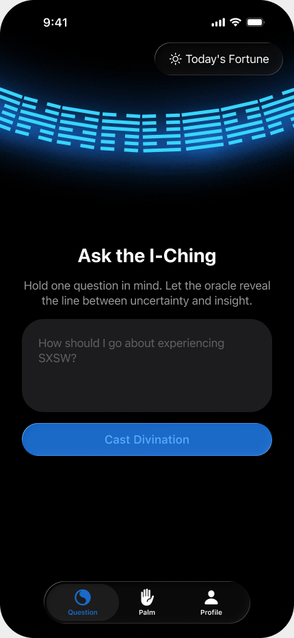
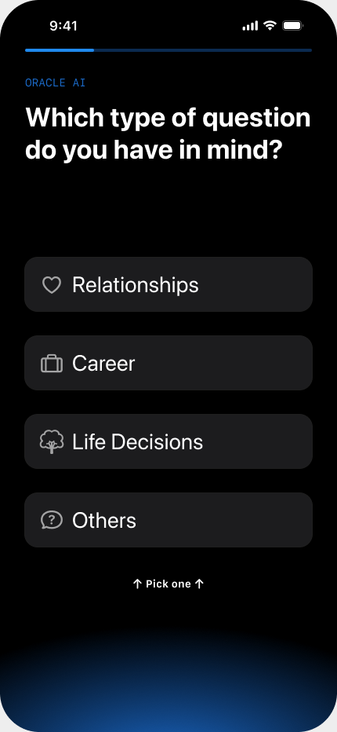
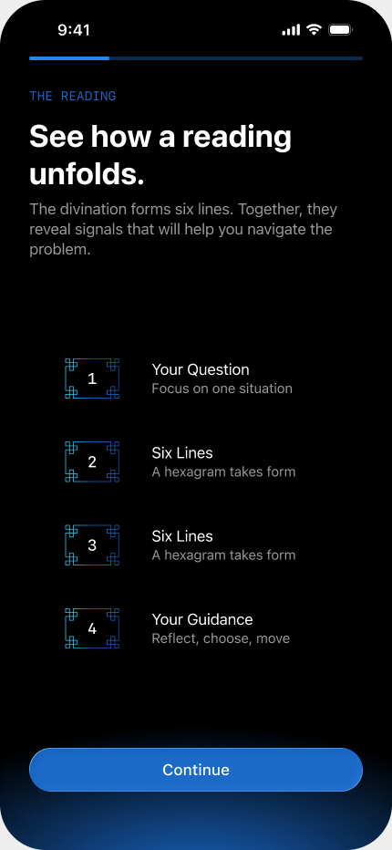
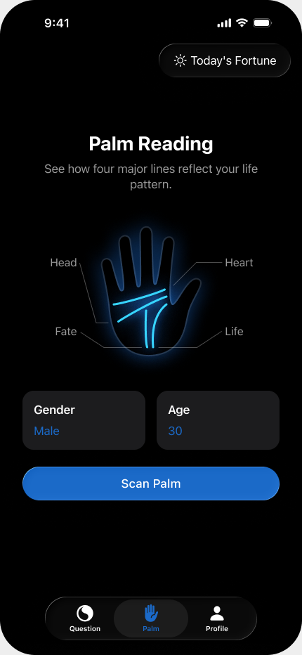
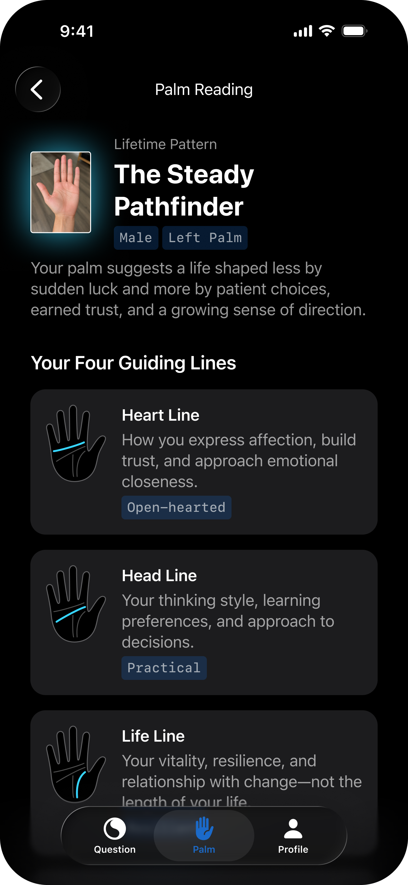
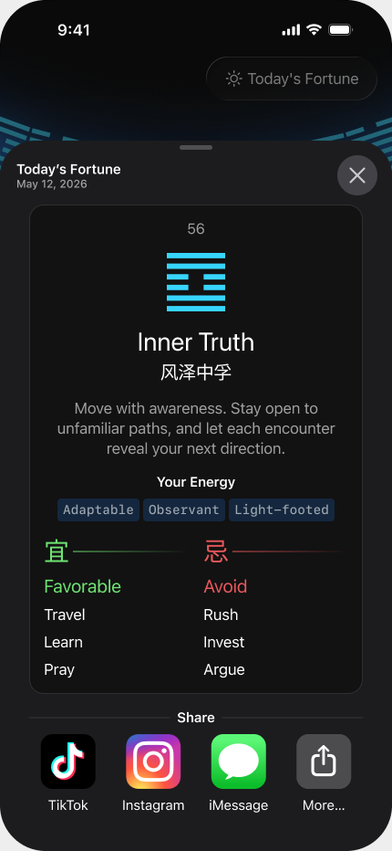

Ask a clear question
Pick relationships, career, life decisions, or something else. The reading starts with the situation already on your mind.
AI ORACLE: I CHING WISDOM
Ask the I Ching or scan your palm for a reading shaped around your situation.

Clarity without a fixed prediction.
The I Ching treats change as part of the answer. Begin with a real question, read the pattern, and decide what makes sense for you.
Choose a topic and focus on the situation you want to understand.
Pick relationships, career, life decisions, or something else. The reading starts with the situation already on your mind.


AI uses the hexagram, its changing lines, and the details of your question to explain what may be shifting.
Take a photo of your palm. AI Oracle looks at the four major lines and brings them together in one personal reading.



Open Today's Fortune for a short daily reading you can reflect on or share.
See today's fortuneWhat readers noticed
I was stuck on a career decision. The reading brought up the concern I kept avoiding, so I could look at the choice more honestly.
I like that it leaves room for my own judgment. It gave me a clearer way to think about my relationship.
I had carried the same question for months. The reading helped me understand why it was still bothering me.
Download AI Oracle on the App Store and choose an I Ching or palm reading.
Download on theApp Store186K+downloads